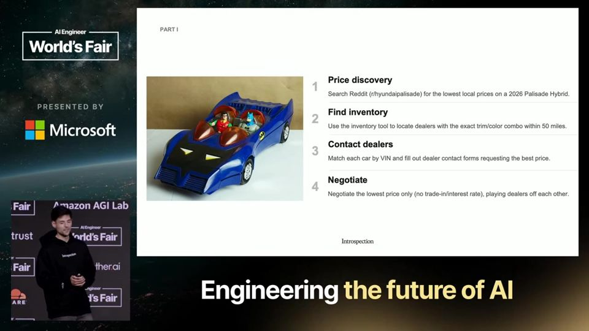
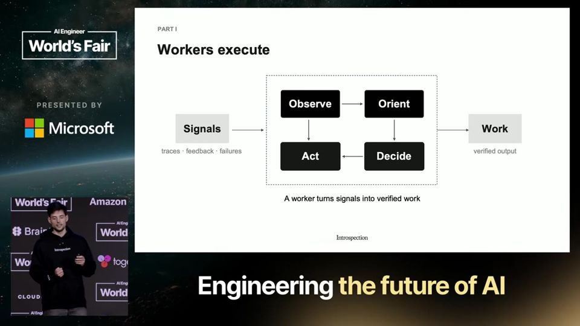
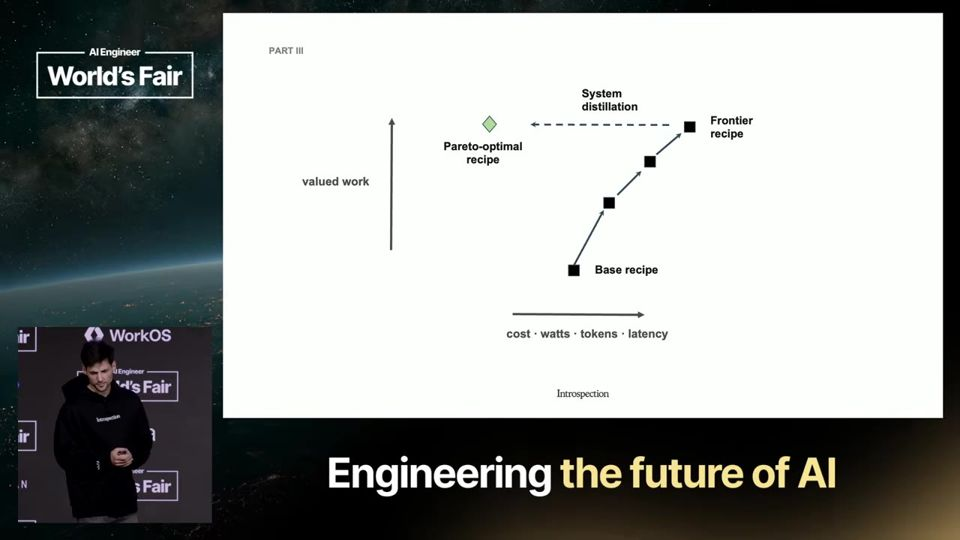
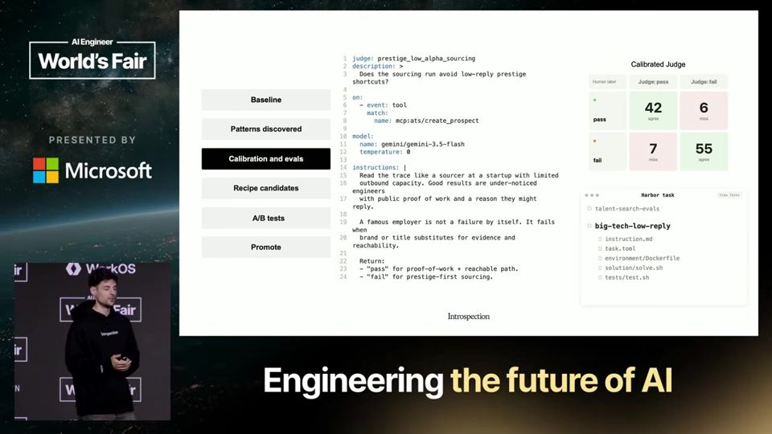

The Loop Is the Product
Quem vence com agentes guarda o aprendizado de cada ciclo em receitas próprias e mede o valor gerado por watt gasto.
Em 3 frases
Roland Gavrilescu, cofundador da Introspection e ex-xAI, defende que o loop (ciclo de trabalho e verificação do agente) é o produto, e que a qualidade do sinal e do verificador decide o resultado.
Ele propõe guardar o que cada ciclo ensina (evals, juízes, skills, julgamento humano) em "receitas de agente", versionadas em git e independentes de modelo e provedor, e apresenta o Pi recipes como versão inicial.
Num exemplo de agente de recrutamento, mostra o caminho completo: achar padrões nos traces, calibrar juízes com uma pessoa, testar a mudança com usuários reais em A/B e só então promover a nova versão.
Antes de ler
- Multi-armed bandit bandit de múltiplos braços (teste A/B adaptativo) analogia abaixo
- Agent loop ciclo do agente
- OODA loop ciclo observar, orientar, decidir, agir
- Verifier verificador
- Harness estrutura de execução do agente
- Agent recipe receita de agente
Mais 2 termos
O primeiro loop viral negociava carro
O palestrante conta o caso de AJ, que usou o OpenClaw (antes chamado Clawbot) para buscar preços e estoque no Reddit, falar com revendedoras e colocá-las para disputar o preço. O agente tinha um jeito verificável de saber quando o preço estava bom e então fechava a compra. Para ele, é o primeiro exemplo claro de que o loop é o produto.

Sinal e verificador definem o sucesso
Ele liga o loop aos ciclos OODA (observar, orientar, decidir, agir) criados pela Força Aérea dos EUA, parecidos com o que os modelos fazem ao chamar ferramentas e ler observações. A qualidade do sinal decide a taxa de sucesso, e o verificador confere se esse sucesso é real. Os artefatos do primeiro loop alimentam um segundo loop que melhora o sistema.

Receita de agente como fosso
Cada loop gera informação sobre harness, perfis, evals, modelos, ferramentas e ambiente. Ele quer guardar isso como uma receita portátil e versionada em um repositório git, no modelo das data recipes de pesquisa em RL. Padrões de falha viram juízes e evals, comportamento repetido vira skills e prompts, e a receita é sua, sem depender de provedor.
05:59 A receita reúne o que o loop aprendeu em um repositório seu.
Mais 2 ideias deste talk
Valor por watt como métrica final
Ele cita a trajetória de Cursor e Cognition, que passaram de melhor produto a melhores evals e depois a modelos próprios. Primeiro se mede o valor do trabalho, depois se verifica se o custo compensa. Só se chega à fronteira rodando em produção, e o passo seguinte, ainda pouco resolvido, é fazer isso caber no orçamento.

Gosto do criador calibra os juízes
No exemplo do agente de recrutamento, os traces mostram que o agente aborda funcionários de big techs, quando o recrutador quer talentos escondidos. Um agente escreve o juiz e o eval, e a pessoa só confirma se o julgamento reflete o seu gosto. Depois um teste A/B com usuários reais decide se a nova receita é promovida.

Multi-armed bandit (bandit de múltiplos braços (teste A/B adaptativo)). Um multi-armed bandit é como um restaurante que coloca dois pratos novos no cardápio, passa a oferecer mais o que os clientes elogiam e continua servindo o outro de vez em quando para ter certeza.
- Imagine uma fileira de máquinas caça-níqueis e você não sabe qual paga mais. Cada máquina é um braço, e cada puxada ensina algo sobre aquela máquina.
- O desafio é dividir as tentativas entre explorar, testando máquinas pouco usadas, e aproveitar, jogando na que parece melhor até agora.
- No agente, cada braço é uma versão da receita. Cada usuário real recebe uma versão, e o resultado dele conta como acerto ou falha daquela versão.
- Um teste A/B comum divide os usuários meio a meio até o fim. O bandit desloca mais usuários para a versão que está ganhando enquanto o teste ainda roda, com métodos como Thompson sampling (amostragem de Thompson).
- Quando uma versão vence com folga, ela vira a nova receita padrão. Assim menos usuários ficam expostos à versão pior durante o teste.
Ajuda saber antes: Teste A/B, Agent recipe, Eval
O talk é um pitch da Introspection e do Pi recipes, e o palestrante não mostra dados de produção, casos de clientes nem comparação com alternativas. O exemplo de recrutamento é hipotético e não traz resultado medido. A ideia de que o dono é a pessoa de gosto superior e os agentes se calibram a ela pode entrar em conflito com o que os usuários querem. O teste A/B só é citado de passagem. Valor por watt fica sem fórmula, e o palestrante admite que o know-how ainda falta.
O que fazer com isso
- Guarde evals, prompts, skills e regras de juízes do seu agente em um repositório git próprio, para trocar de modelo sem perder o que aprendeu.
- Leia traces de execução reais e agrupe as falhas repetidas. Cada grupo é um candidato a eval ou regra de prompt.
- Ao criar um juiz de IA, valide com uma pessoa se o julgamento bate com o que você considera bom antes de confiar nele.
- Antes de promover uma mudança no agente, compare a versão nova com a atual entre usuários reais e meça também o custo por resultado.